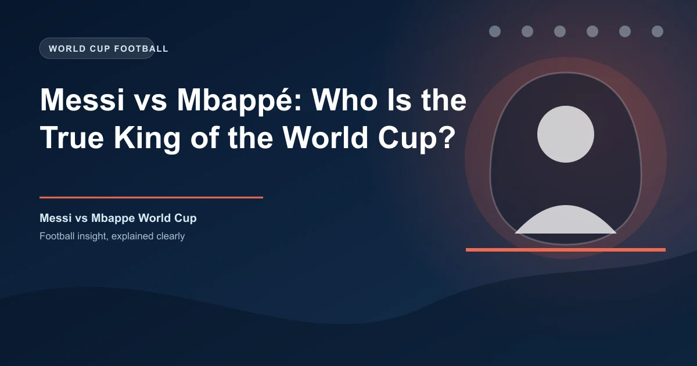

There are two players who have defined the modern FIFA World Cup more than any others. Lionel Messi, the 38-year-old Argentine who has played in six tournaments and now holds virtually every all-time record the competition has to offer. And Kylian Mbappé, the 27-year-old Frenchman who arrived at his third World Cup and immediately began threatening those same records with an efficiency that borders on absurd.
The debate over who owns the World Cup is no longer a hypothetical. With both players performing at the highest level at the 2026 tournament in the United States, Canada, and Mexico, the data exists to settle it — or at least to frame the argument with numbers rather than emotion. This is the head-to-head comparison.
The first thing to understand about this comparison is that it is not an apples-to-apples situation. Messi has played in six World Cups across 20 years. Mbappé has played in three. Messi is 38. Mbappé is 27. The raw numbers naturally favour the player with more tournaments — but the rate at which Mbappé has accumulated his numbers is what makes the comparison genuinely interesting.
| Category | Messi 🇦🇷 | Mbappé 🇫🇷 | Edge |
|---|---|---|---|
| World Cup Tournaments | 6 (2006-2026) | 3 (2018-2026) | Messi |
| World Cup Appearances | 29 (record) | 20 | Messi |
| World Cup Goals | 20 (record) | 20 (record) | Tied |
| World Cup Assists | 8 | 5 | Messi |
| Goal Involvements (G+A) | 27 (record) | 23 | Messi |
| Knockout Stage Goals | 7 | 12 (record) | Mbappé |
| Non-Penalty Goals | 17 | 17 | Tied |
| World Cup Wins | 19 (record) | 14 | Messi |
| World Cup Finals | 3 (2014, 2022, 2026?) | 2 (2018, 2022) | Messi |
| World Cup Titles | 1 (2022) | 1 (2018) | Tied |
| Golden Boot | 0 | 1 (2022) | Mbappé |
| Golden Ball | 2 (2014, 2022) | 0 | Messi |
| Final Hat-Tricks | 0 | 1 (2022) | Mbappé |
| Goals Per Tournament | 3.2 | 6.0 | Mbappé |
| Goals Per Appearance | 0.66 | 0.90 | Mbappé |
| Consecutive Matches Scored | 7 (record) | 4 | Messi |
| Appearances Before Age 28 | 15 | 20 | Mbappé |
Messi's World Cup career is among the most decorated in the history of the tournament. He holds the records for most appearances (29), most wins (19), and most goal involvements (27). He has played more minutes (2,490) than any other player at a World Cup. He is the only player to have scored in seven consecutive World Cup matches. He won the Golden Ball as the tournament's best player in both 2014 and 2022 — the only player to win it twice. His 20 goals place him joint-top on the all-time scoring list, level with Mbappé.
And then there is the 2022 final. Messi scored twice in the final against France, including a goal in extra time, before Argentina won on penalties. It is widely considered the greatest World Cup final ever played. In a single match, Messi produced more moments of individual brilliance than most players produce in entire tournaments. He was 35 years old.
Messi's 2026 tournament has added to the legacy. At 38, he scored a hat-trick against Algeria — becoming the oldest player to score a World Cup hat-trick in history at 38 years and 357 days. He surpassed Miroslav Klose's record of 16 goals to become the all-time leading scorer with 19. He became the first player to score in seven consecutive World Cup matches. And he has 27 career goal involvements, surpassing Pelé's previous record of 21.
Most goals (19) · Most appearances (29) · Most wins (19) · Most goal involvements (27) · Most minutes played (2,490) · First to score in 7 consecutive matches · Oldest hat-trick scorer (38y 357d) · Most Golden Ball awards (2)
The case for Messi as the World Cup's greatest player rests on longevity, consistency, and the sheer weight of accumulated records. He has been the best player at two separate World Cups (2014, 2022). He has scored in six different tournament editions. He has performed on the biggest stage for two decades. No other player in history can match that timeline.
If Messi's case is built on volume and longevity, Mbappé's case is built on something more frightening: sustained peak performance at a rate the tournament has never seen before.
Mbappé has played in three World Cups. He has scored 20 goals. That is a rate of 6.7 goals per tournament — more than double Messi's career rate of 3.3. He has scored 0.95 goals per appearance compared to Messi's 0.69. And crucially, 12 of those 20 goals have come in knockout matches — more than any player in World Cup history. When the stakes are highest, Mbappé scores more than anyone who has ever played the game.
Consider the timeline. At 19, Mbappé scored four goals at the 2018 World Cup, including one in the final — becoming only the second teenager after Pelé to score in a World Cup final. At 23, he scored eight goals at the 2022 World Cup, including a hat-trick in the final — the first in a World Cup final since 1966. At 27, he has scored more goals at the 2026 tournament, leading France to the semi-finals.
By the age of 27, Mbappé had already accumulated 20 World Cup goals — matching Messi's all-time record. Messi had 8 at the same age. Ronaldo had 7. Mbappé reached 20 World Cup appearances faster than any player in history, becoming the youngest to hit that mark at 27 years and 201 days. He has scored in three consecutive World Cup knockout rounds — a streak of big-game performances that has no parallel.
Most knockout-stage goals (12) · Most goals by a European at the World Cup (18) · France's all-time top World Cup scorer · Youngest to 20 WC appearances (27y 201d) · First with 11+ goal contributions in 2 World Cups · First teenager to score in a WC final since Pelé · Only player with WC final hat-trick since 1966
And then there is the 2022 final itself. Mbappé scored a hat-trick against Argentina — two goals in 97 seconds to force extra time, then another in extra time to force penalties. He scored three goals in a World Cup final and still lost. That is the kind of performance that transcends statistics. It was, by any measure, one of the greatest individual performances in the history of the tournament — in a match his team ultimately lost.
The two have faced each other at the World Cup once — the 2022 final. Messi scored twice. Mbappé scored three times. Argentina won on penalties. It remains the greatest World Cup final ever played, and both players were the best two performers on the pitch.
In that single match, both players produced career-defining performances. Messi won the trophy. Mbappé won the Golden Boot. Neither player's legacy was diminished by the result — both were enhanced.
The 2026 World Cup has added another chapter to this rivalry. Both Messi and Mbappé have been among the tournament's top scorers, and the Golden Boot race has been one of the tightest in World Cup history.
Mbappé's three assists give him the edge in total goal involvements for the tournament, but Messi leads on the Golden Boot criteria. The race could go down to the final.
The answer depends on what you value.
Messi is the answer. He holds the records for most goals (19), most appearances (29), most wins (19), most goal involvements (27), and most minutes played (2,490). He has been the best player at two World Cups. He has performed at the highest level for 20 years. The weight of accumulated achievement is unmatched by any player in history.
Mbappé is the answer. He has scored more knockout-stage goals (12) than any player ever. He has scored more goals per tournament (6.7) and per appearance (0.95) than any other player with a comparable sample. He has matched Messi's all-time scoring record with 20 goals at just age 27. He has scored in World Cup finals as a teenager and as a 23-year-old. His rate of production at the biggest moments is historically unmatched.
The truth is that both players own different aspects of the World Cup. Messi owns the cumulative records — the goals, the appearances, the wins, the longevity. Mbappé owns the knockout-stage moments — the finals, the hat-tricks, the big-game goals that decide tournaments. One is the marathon runner. The other is the sprinter. Both are the best at what they do.
But if forced to choose one player as the King of the World Cup, the answer is …
Messi has indicated that the 2026 World Cup is his last. If Argentina reach the final on July 19, it would be his fourth World Cup final appearance — another record. He would retire as the most decorated player in World Cup history by every measurable standard.
Mbappé, at 27, could play in at least one more World Cup in 2030 — potentially two more. He has already matched Messi's all-time scoring record with 20 goals. At his current rate of 6.7 goals per tournament, he could finish his career with 30+ World Cup goals — a number that would make him the undisputed greatest goalscorer in the history of the competition by an enormous margin.
The debate is not over. It is just entering its most interesting phase. And for football fans, that is the best possible outcome.
The 2026 World Cup semi-finals and final are approaching. If you want to place informed bets on the remaining matches, check our free daily football predictions powered by AI analysis. Our Ticket Builder can help you build optimized accumulator combinations from the final matches of the tournament.
Get free football predictions for every remaining match. Data-driven picks, updated daily.
Generate optimized accumulator combinations from today's AI-powered predictions. Set your target odds and get instant ticket suggestions.
Pro Ticket Builder →